🏰 ما هو Nico’s More Dungeon Addon؟
هو مود أسطوري وضخم جدا يضيف مجموعة من الدانجن والمتاهات الواسعة والجديدة المنتشرة في أنحاء عالم ماين كرافت. جهز نفسك جيدا لخوض مغامرات خطيرة داخل هذه الحصون المليئة بالوحوش القوية والعدائية واللوت الثمين الذي ينتظر من يكتشفه. تتكون الدانجنز من غرف مميزة تقدم لك تحديات ومفاجآت حماسية في كل زاوية، بالإضافة إلى وحوش ميني بوس (Mini Boss) قوية تحرس الكنوز المخفية في الأعماق.
🔧 الميزات الأساسية والدانجنز:
- دانجن الفئران (Rats Dungeon): هيكل مميز يترسبن في عوالم متنوعة مثل السهول والغابات والمستنقعات وجزر الفطر ويحتوي على وحوش فئران مخصصة.
- دانجن الزومبي (Zombie Dungeon): معقل مرعب يظهر في مناطق السهول والغابات والمستنقعات والسافانا مليء بتحديات وحوش الزومبي القوية.
- دهاليز الديب سليت (Deepslate Catacomb): متاهات حجرية ضخمة وصعبة تترسبن بالكامل تحت الأرض في طبقات الديب سليت لعشاق الكهوف.
👹 الوحوش والميني بوس الجدد:
- ساحر الفئران (Rat Curserer): ميني بوس يمتلك 200 قلوب ويترسبن داخل دانجن الفئران فقط، يهاجم بالسحر ويقوم باستدعاء وتحويل الفئران العادية إلى فئران ملعونة.
- الزومبي العملاق (Brute Zombie): وحش قوي يمتلك 240 قلوب ويتواجد في دانجن الزومبي، ضرباته تسبب تأثير الجوع (Hunger) الحاد للاعبين.
- جولم القديم (Elder Golem): وحش مدمر يمتلك 380 قلوب يعيش في دهاليز الديب سليت، يستطيع تدمير المزروعات والنباتات والشموع، ويعطيك ألماس عند القضاء عليه.
- الفئران العادية والملعونة (Rats & Cursed Rats): كائنات تنتشر في العالم، الفئران العادية يمكن ترويضها بفطيرة اليقطين، أما الفلعونة فهي عدائية وتدمر المحاصيل.
- جولم الديب سليت (Cobbled Deepslate Golem): وحش قوي يعيش تحت الأرض ويمكنك ترويضه باستخدام الزمرد المطور (Enchanted Emerald) ليصبح حليفا لك.
⚔️ الأدوات والعناصر الجديدة:
- عصا ساحر الفئران (Rat Curserer Staff): سلاح سحري نادر يطلق قذائف تسبب ضررا كبيرا، وعند وضعه على الأرض يعمل كدرع يطرد الوحوش الملعونة القريبة.
- لحم الزومبي العملاق (Rotten Brute Flesh): عند أكله يعطيك تأثير القوة (Strength) لدقيقتين كاملتين مع تأثير الجوع.
- لحم الفئران المطبوخ (Cooked Rat): مصدر طعام جديد ومميز يمكنك طبخه وأكله بأمان داخل عوالم السرفايفل.
🧠 طريقة الاستخدام:
• انطلق في رحلة استكشاف واسعة في عالمك للبحث عن الدانجنز الجديدة سواء فوق الأرض في الغابات أو في أعماق الكهوف وتحت طبقات الديب سليت.
• جهز أفضل الدروع والأسلحة لقتال الميني بوس لحماية القرويين والحصول على الألماس وعصا السحر والأدوات الأسطورية المخفية داخل الصناديق.
📘 الدعم والتحديثات:
- المود يشتغل على تحديث 26.x (وإصدارات 1.21 وما فوق)
- يشتغل على اصدار البيدروك والجوال
- يجب اشعال الاكسبايرمنت ليشتغل المود
📷 صور من المود:

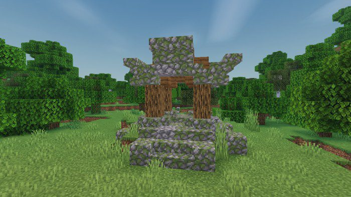
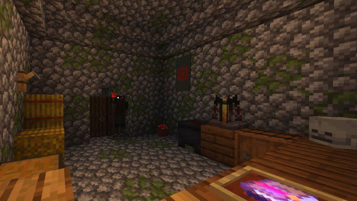
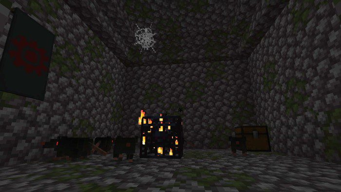
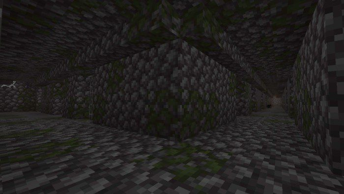
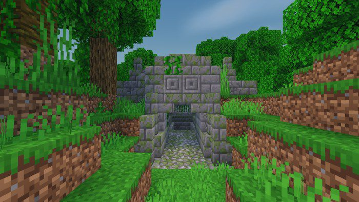
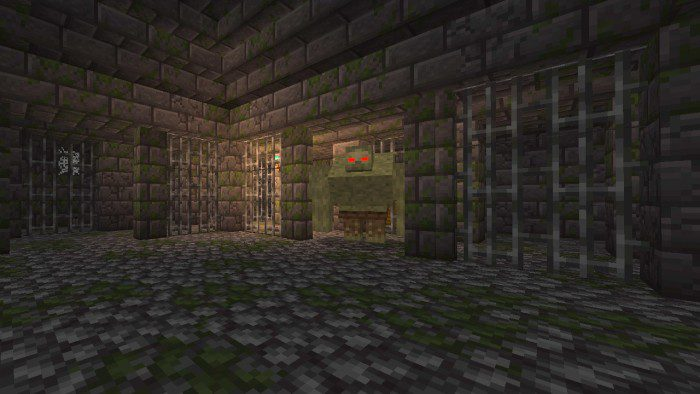
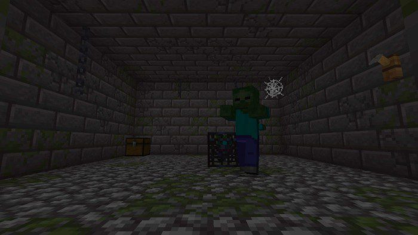
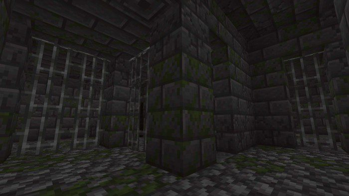
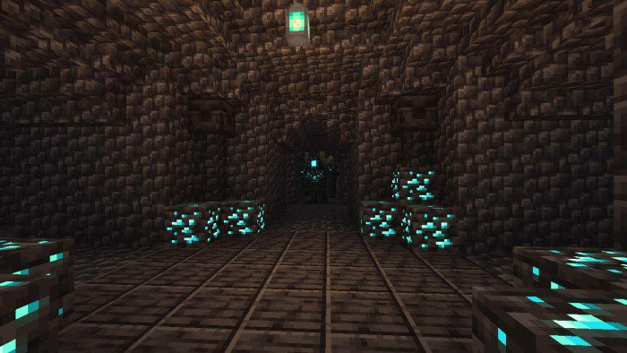
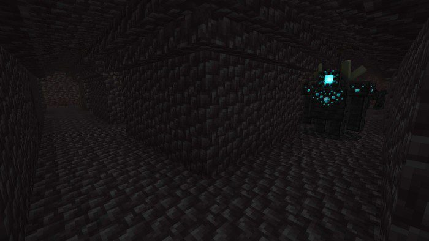
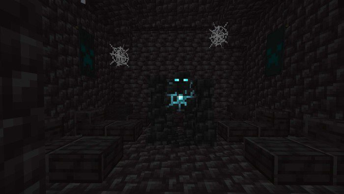
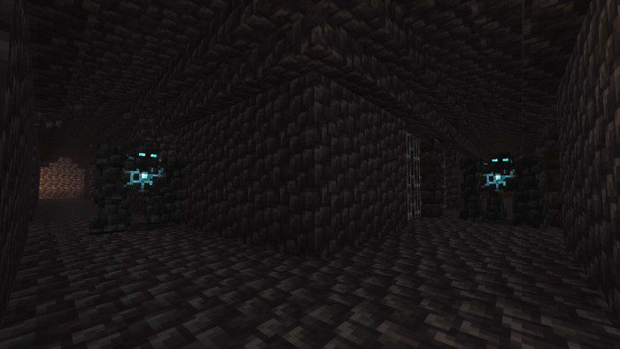
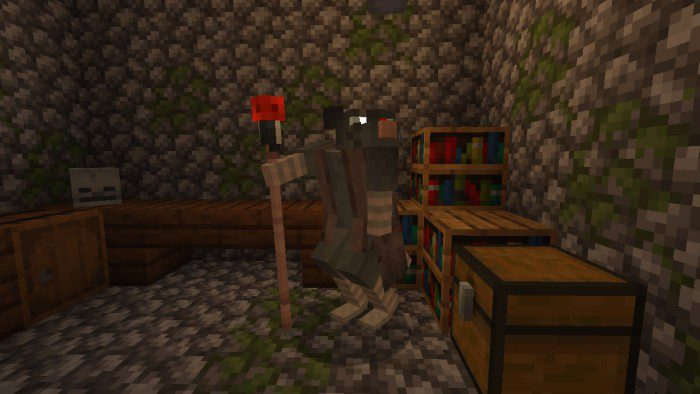
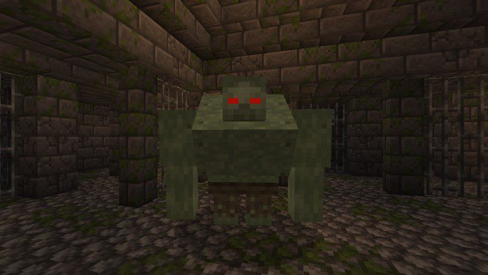
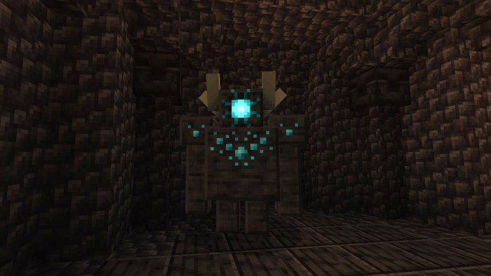
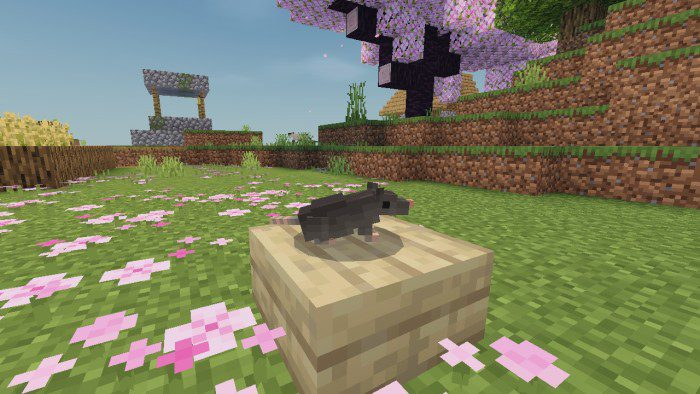
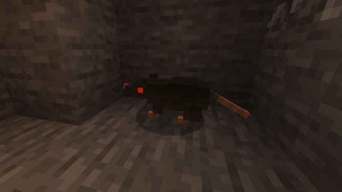